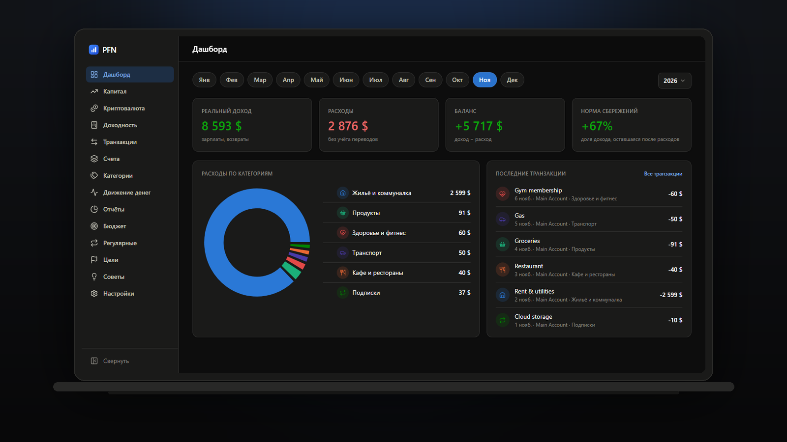
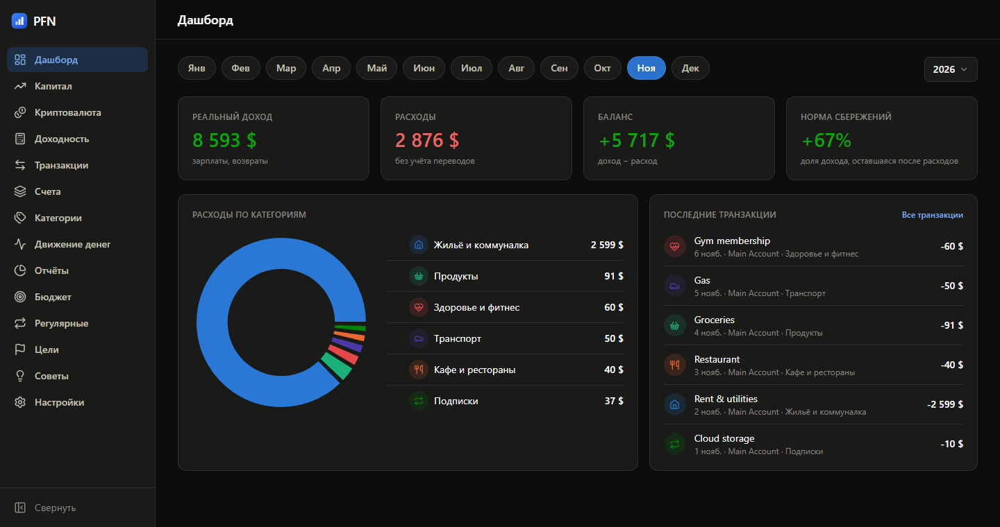
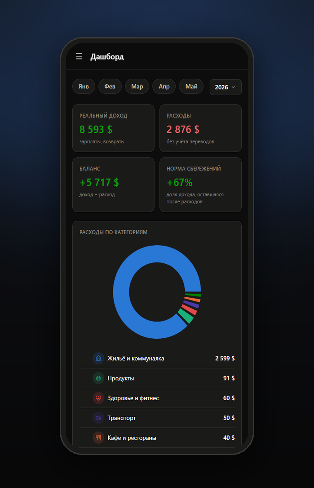

PFN — Private Finance Tracker

Все ваши деньги в одном окне. Счета, доходы и расходы, капитал, бюджеты, цели, регулярные платежи, активы и криптопортфель — в приложении, которое работает на вашем компьютере. Данные лежат в одном файле и никуда не отправляются.
Скачать для Windows · Исходный код · Как установить
Что это даёт
| Без облака | База — файл pfn.db в вашем профиле. Нет аккаунта, подписки и синхронизации «куда-то там». |
| Без инфраструктуры | Не нужны Docker, Postgres, nginx, Node.js. Один процесс, одна кнопка «Запустить». |
| Без пересборки | Скачали установщик — работает. Python и Node внутри, ставить ничего не надо. |
| С бэкапом | Весь набор данных выгружается в один JSON в любой момент и так же восстанавливается. |
Как это выглядит

Экран отвечает на вопрос «сколько я реально заработал и куда ушло», а не показывает одну круговую диаграмму за прошлый месяц: реальный доход, расходы, баланс и норма сбережений, разбивка по категориям и последние операции.
На телефоне

Интерфейс собран mobile-first: на узком экране карточки перестраиваются в одну колонку, меню уезжает в шторку. Телефон открывает то же приложение по домашней сети — данные остаются на вашем компьютере.
Что внутри
- Денежный поток — доходы, расходы, переводы; категории с подкатегориями, теги, поиск, разделение одной покупки на несколько категорий.
- Капитал — график чистого капитала и разбивка по классам активов, риску и роли капитала.
- Криптовалюта — портфели, история покупок, средняя цена, P/L.
- Бюджеты, цели, регулярные платежи — лимиты по категориям, взносы в цели, проведение регулярных операций одной кнопкой.
- Отчёты и советы — рейтинг категорий за период и правила-подсказки.
- Калькулятор доходности — окупаемость и сложный процент с графиком.
- Импорт CSV — Т-Банк, monobank, ПриватБанк или своя схема колонок.
Подробнее — Возможности.